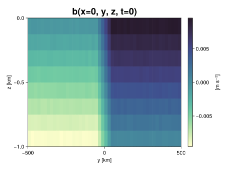
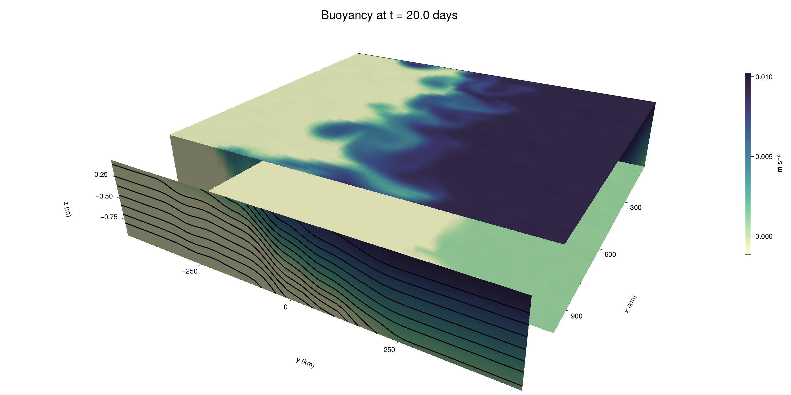

Baroclinic adjustment
In this example, we simulate the evolution and equilibration of a baroclinically unstable front.
Install dependencies
First let's make sure we have all required packages installed.
using Pkg
pkg"add Oceananigans, CairoMakie"using Oceananigans
using Oceananigans.UnitsGrid
We use a three-dimensional channel that is periodic in the x direction:
Lx = 1000kilometers # east-west extent [m]
Ly = 1000kilometers # north-south extent [m]
Lz = 1kilometers # depth [m]
grid = RectilinearGrid(size = (48, 48, 8),
x = (0, Lx),
y = (-Ly/2, Ly/2),
z = (-Lz, 0),
topology = (Periodic, Bounded, Bounded))48×48×8 RectilinearGrid{Float64, Periodic, Bounded, Bounded} on CPU with 3×3×3 halo
├── Periodic x ∈ [0.0, 1.0e6) regularly spaced with Δx=20833.3
├── Bounded y ∈ [-500000.0, 500000.0] regularly spaced with Δy=20833.3
└── Bounded z ∈ [-1000.0, 0.0] regularly spaced with Δz=125.0Model
We built a HydrostaticFreeSurfaceModel with an ImplicitFreeSurface solver. Regarding Coriolis, we use a beta-plane centered at 45° South.
model = HydrostaticFreeSurfaceModel(; grid,
coriolis = BetaPlane(latitude = -45),
buoyancy = BuoyancyTracer(),
tracers = :b,
momentum_advection = WENO(),
tracer_advection = WENO())HydrostaticFreeSurfaceModel{CPU, RectilinearGrid}(time = 0 seconds, iteration = 0)
├── grid: 48×48×8 RectilinearGrid{Float64, Periodic, Bounded, Bounded} on CPU with 3×3×3 halo
├── timestepper: QuasiAdamsBashforth2TimeStepper
├── tracers: b
├── closure: Nothing
├── buoyancy: BuoyancyTracer with ĝ = NegativeZDirection()
├── free surface: ImplicitFreeSurface with gravitational acceleration 9.80665 m s⁻²
│ └── solver: FFTImplicitFreeSurfaceSolver
├── advection scheme:
│ ├── momentum: WENO reconstruction order 5
│ └── b: WENO reconstruction order 5
└── coriolis: BetaPlane{Float64}We start our simulation from rest with a baroclinically unstable buoyancy distribution. We use ramp(y, Δy), defined below, to specify a front with width Δy and horizontal buoyancy gradient M². We impose the front on top of a vertical buoyancy gradient N² and a bit of noise.
"""
ramp(y, Δy)
Linear ramp from 0 to 1 between -Δy/2 and +Δy/2.
For example:
```
y < -Δy/2 => ramp = 0
-Δy/2 < y < -Δy/2 => ramp = y / Δy
y > Δy/2 => ramp = 1
```
"""
ramp(y, Δy) = min(max(0, y/Δy + 1/2), 1)
N² = 1e-5 # [s⁻²] buoyancy frequency / stratification
M² = 1e-7 # [s⁻²] horizontal buoyancy gradient
Δy = 100kilometers # width of the region of the front
Δb = Δy * M² # buoyancy jump associated with the front
ϵb = 1e-2 * Δb # noise amplitude
bᵢ(x, y, z) = N² * z + Δb * ramp(y, Δy) + ϵb * randn()
set!(model, b=bᵢ)Let's visualize the initial buoyancy distribution.
using CairoMakie
# Build coordinates with units of kilometers
x, y, z = 1e-3 .* nodes(grid, (Center(), Center(), Center()))
b = model.tracers.b
fig, ax, hm = heatmap(y, z, interior(b)[1, :, :],
colormap=:deep,
axis = (xlabel = "y [km]",
ylabel = "z [km]",
title = "b(x=0, y, z, t=0)",
titlesize = 24))
Colorbar(fig[1, 2], hm, label = "[m s⁻²]")
fig
Simulation
Now let's build a Simulation.
simulation = Simulation(model, Δt=20minutes, stop_time=20days)Simulation of HydrostaticFreeSurfaceModel{CPU, RectilinearGrid}(time = 0 seconds, iteration = 0)
├── Next time step: 20 minutes
├── Elapsed wall time: 0 seconds
├── Wall time per iteration: NaN days
├── Stop time: 20 days
├── Stop iteration : Inf
├── Wall time limit: Inf
├── Callbacks: OrderedDict with 4 entries:
│ ├── stop_time_exceeded => Callback of stop_time_exceeded on IterationInterval(1)
│ ├── stop_iteration_exceeded => Callback of stop_iteration_exceeded on IterationInterval(1)
│ ├── wall_time_limit_exceeded => Callback of wall_time_limit_exceeded on IterationInterval(1)
│ └── nan_checker => Callback of NaNChecker for u on IterationInterval(100)
├── Output writers: OrderedDict with no entries
└── Diagnostics: OrderedDict with no entriesWe add a TimeStepWizard callback to adapt the simulation's time-step,
conjure_time_step_wizard!(simulation, IterationInterval(20), cfl=0.2, max_Δt=20minutes)Also, we add a callback to print a message about how the simulation is going,
using Printf
wall_clock = Ref(time_ns())
function print_progress(sim)
u, v, w = model.velocities
progress = 100 * (time(sim) / sim.stop_time)
elapsed = (time_ns() - wall_clock[]) / 1e9
@printf("[%05.2f%%] i: %d, t: %s, wall time: %s, max(u): (%6.3e, %6.3e, %6.3e) m/s, next Δt: %s\n",
progress, iteration(sim), prettytime(sim), prettytime(elapsed),
maximum(abs, u), maximum(abs, v), maximum(abs, w), prettytime(sim.Δt))
wall_clock[] = time_ns()
return nothing
end
add_callback!(simulation, print_progress, IterationInterval(100))Diagnostics/Output
Here, we save the buoyancy, $b$, at the edges of our domain as well as the zonal ($x$) average of buoyancy.
u, v, w = model.velocities
ζ = ∂x(v) - ∂y(u)
B = Average(b, dims=1)
U = Average(u, dims=1)
V = Average(v, dims=1)
filename = "baroclinic_adjustment"
save_fields_interval = 0.5day
slicers = (east = (grid.Nx, :, :),
north = (:, grid.Ny, :),
bottom = (:, :, 1),
top = (:, :, grid.Nz))
for side in keys(slicers)
indices = slicers[side]
simulation.output_writers[side] = JLD2OutputWriter(model, (; b, ζ);
filename = filename * "_$(side)_slice",
schedule = TimeInterval(save_fields_interval),
overwrite_existing = true,
indices)
end
simulation.output_writers[:zonal] = JLD2OutputWriter(model, (; b=B, u=U, v=V);
filename = filename * "_zonal_average",
schedule = TimeInterval(save_fields_interval),
overwrite_existing = true)JLD2OutputWriter scheduled on TimeInterval(12 hours):
├── filepath: ./baroclinic_adjustment_zonal_average.jld2
├── 3 outputs: (b, u, v)
├── array type: Array{Float64}
├── including: [:grid, :coriolis, :buoyancy, :closure]
└── max filesize: Inf YiBNow we're ready to run.
@info "Running the simulation..."
run!(simulation)
@info "Simulation completed in " * prettytime(simulation.run_wall_time)[ Info: Running the simulation...
[ Info: Initializing simulation...
[00.00%] i: 0, t: 0 seconds, wall time: 48.989 seconds, max(u): (0.000e+00, 0.000e+00, 0.000e+00) m/s, next Δt: 20 minutes
[ Info: ... simulation initialization complete (29.976 seconds)
[ Info: Executing initial time step...
[ Info: ... initial time step complete (16.794 seconds).
[06.94%] i: 100, t: 1.389 days, wall time: 44.363 seconds, max(u): (1.293e-01, 1.216e-01, 1.658e-03) m/s, next Δt: 20 minutes
[13.89%] i: 200, t: 2.778 days, wall time: 4.812 seconds, max(u): (2.072e-01, 1.856e-01, 1.811e-03) m/s, next Δt: 20 minutes
[20.83%] i: 300, t: 4.167 days, wall time: 4.810 seconds, max(u): (2.737e-01, 2.268e-01, 1.836e-03) m/s, next Δt: 20 minutes
[27.78%] i: 400, t: 5.556 days, wall time: 4.861 seconds, max(u): (3.350e-01, 2.716e-01, 1.805e-03) m/s, next Δt: 20 minutes
[34.72%] i: 500, t: 6.944 days, wall time: 4.903 seconds, max(u): (3.935e-01, 3.404e-01, 1.733e-03) m/s, next Δt: 20 minutes
[41.67%] i: 600, t: 8.333 days, wall time: 4.826 seconds, max(u): (4.883e-01, 4.659e-01, 1.975e-03) m/s, next Δt: 20 minutes
[48.61%] i: 700, t: 9.722 days, wall time: 4.818 seconds, max(u): (6.592e-01, 6.891e-01, 2.693e-03) m/s, next Δt: 20 minutes
[55.56%] i: 800, t: 11.111 days, wall time: 4.877 seconds, max(u): (8.408e-01, 1.112e+00, 3.802e-03) m/s, next Δt: 20 minutes
[62.50%] i: 900, t: 12.500 days, wall time: 4.841 seconds, max(u): (1.164e+00, 1.212e+00, 4.047e-03) m/s, next Δt: 20 minutes
[69.44%] i: 1000, t: 13.889 days, wall time: 4.748 seconds, max(u): (1.403e+00, 1.248e+00, 4.392e-03) m/s, next Δt: 20 minutes
[76.39%] i: 1100, t: 15.278 days, wall time: 4.714 seconds, max(u): (1.151e+00, 1.419e+00, 4.649e-03) m/s, next Δt: 20 minutes
[83.33%] i: 1200, t: 16.667 days, wall time: 4.991 seconds, max(u): (1.377e+00, 1.698e+00, 4.147e-03) m/s, next Δt: 20 minutes
[90.28%] i: 1300, t: 18.056 days, wall time: 5.028 seconds, max(u): (1.495e+00, 1.784e+00, 3.007e-03) m/s, next Δt: 20 minutes
[97.22%] i: 1400, t: 19.444 days, wall time: 5.070 seconds, max(u): (1.465e+00, 1.536e+00, 3.069e-03) m/s, next Δt: 20 minutes
[ Info: Simulation is stopping after running for 2.008 minutes.
[ Info: Simulation time 20 days equals or exceeds stop time 20 days.
[ Info: Simulation completed in 2.010 minutes
Visualization
All that's left is to make a pretty movie. Actually, we make two visualizations here. First, we illustrate how to make a 3D visualization with Makie's Axis3 and Makie.surface. Then we make a movie in 2D. We use CairoMakie in this example, but note that using GLMakie is more convenient on a system with OpenGL, as figures will be displayed on the screen.
using CairoMakieThree-dimensional visualization
We load the saved buoyancy output on the top, bottom, north, and east surface as FieldTimeSerieses.
filename = "baroclinic_adjustment"
sides = keys(slicers)
slice_filenames = NamedTuple(side => filename * "_$(side)_slice.jld2" for side in sides)
b_timeserieses = (east = FieldTimeSeries(slice_filenames.east, "b"),
north = FieldTimeSeries(slice_filenames.north, "b"),
bottom = FieldTimeSeries(slice_filenames.bottom, "b"),
top = FieldTimeSeries(slice_filenames.top, "b"))
B_timeseries = FieldTimeSeries(filename * "_zonal_average.jld2", "b")
times = B_timeseries.times
grid = B_timeseries.grid48×48×8 RectilinearGrid{Float64, Periodic, Bounded, Bounded} on CPU with 3×3×3 halo
├── Periodic x ∈ [0.0, 1.0e6) regularly spaced with Δx=20833.3
├── Bounded y ∈ [-500000.0, 500000.0] regularly spaced with Δy=20833.3
└── Bounded z ∈ [-1000.0, 0.0] regularly spaced with Δz=125.0We build the coordinates. We rescale horizontal coordinates to kilometers.
xb, yb, zb = nodes(b_timeserieses.east)
xb = xb ./ 1e3 # convert m -> km
yb = yb ./ 1e3 # convert m -> km
Nx, Ny, Nz = size(grid)
x_xz = repeat(x, 1, Nz)
y_xz_north = y[end] * ones(Nx, Nz)
z_xz = repeat(reshape(z, 1, Nz), Nx, 1)
x_yz_east = x[end] * ones(Ny, Nz)
y_yz = repeat(y, 1, Nz)
z_yz = repeat(reshape(z, 1, Nz), grid.Ny, 1)
x_xy = x
y_xy = y
z_xy_top = z[end] * ones(grid.Nx, grid.Ny)
z_xy_bottom = z[1] * ones(grid.Nx, grid.Ny)Then we create a 3D axis. We use zonal_slice_displacement to control where the plot of the instantaneous zonal average flow is located.
fig = Figure(size = (1600, 800))
zonal_slice_displacement = 1.2
ax = Axis3(fig[2, 1],
aspect=(1, 1, 1/5),
xlabel = "x (km)",
ylabel = "y (km)",
zlabel = "z (m)",
xlabeloffset = 100,
ylabeloffset = 100,
zlabeloffset = 100,
limits = ((x[1], zonal_slice_displacement * x[end]), (y[1], y[end]), (z[1], z[end])),
elevation = 0.45,
azimuth = 6.8,
xspinesvisible = false,
zgridvisible = false,
protrusions = 40,
perspectiveness = 0.7)Axis3()We use data from the final savepoint for the 3D plot. Note that this plot can easily be animated by using Makie's Observable. To dive into Observables, check out Makie.jl's Documentation.
n = length(times)41Now let's make a 3D plot of the buoyancy and in front of it we'll use the zonally-averaged output to plot the instantaneous zonal-average of the buoyancy.
b_slices = (east = interior(b_timeserieses.east[n], 1, :, :),
north = interior(b_timeserieses.north[n], :, 1, :),
bottom = interior(b_timeserieses.bottom[n], :, :, 1),
top = interior(b_timeserieses.top[n], :, :, 1))
# Zonally-averaged buoyancy
B = interior(B_timeseries[n], 1, :, :)
clims = 1.1 .* extrema(b_timeserieses.top[n][:])
kwargs = (colorrange=clims, colormap=:deep)
surface!(ax, x_yz_east, y_yz, z_yz; color = b_slices.east, kwargs...)
surface!(ax, x_xz, y_xz_north, z_xz; color = b_slices.north, kwargs...)
surface!(ax, x_xy, y_xy, z_xy_bottom ; color = b_slices.bottom, kwargs...)
surface!(ax, x_xy, y_xy, z_xy_top; color = b_slices.top, kwargs...)
sf = surface!(ax, zonal_slice_displacement .* x_yz_east, y_yz, z_yz; color = B, kwargs...)
contour!(ax, y, z, B; transformation = (:yz, zonal_slice_displacement * x[end]),
levels = 15, linewidth = 2, color = :black)
Colorbar(fig[2, 2], sf, label = "m s⁻²", height = Relative(0.4), tellheight=false)
title = "Buoyancy at t = " * string(round(times[n] / day, digits=1)) * " days"
fig[1, 1:2] = Label(fig, title; fontsize = 24, tellwidth = false, padding = (0, 0, -120, 0))
rowgap!(fig.layout, 1, Relative(-0.2))
colgap!(fig.layout, 1, Relative(-0.1))
save("baroclinic_adjustment_3d.png", fig)
Two-dimensional movie
We make a 2D movie that shows buoyancy $b$ and vertical vorticity $ζ$ at the surface, as well as the zonally-averaged zonal and meridional velocities $U$ and $V$ in the $(y, z)$ plane. First we load the FieldTimeSeries and extract the additional coordinates we'll need for plotting
ζ_timeseries = FieldTimeSeries(slice_filenames.top, "ζ")
U_timeseries = FieldTimeSeries(filename * "_zonal_average.jld2", "u")
B_timeseries = FieldTimeSeries(filename * "_zonal_average.jld2", "b")
V_timeseries = FieldTimeSeries(filename * "_zonal_average.jld2", "v")
xζ, yζ, zζ = nodes(ζ_timeseries)
yv = ynodes(V_timeseries)
xζ = xζ ./ 1e3 # convert m -> km
yζ = yζ ./ 1e3 # convert m -> km
yv = yv ./ 1e3 # convert m -> km49-element Vector{Float64}:
-500.0
-479.1666666666667
-458.3333333333333
-437.5
-416.6666666666667
-395.8333333333333
-375.0
-354.1666666666667
-333.3333333333333
-312.5
-291.6666666666667
-270.8333333333333
-250.0
-229.16666666666666
-208.33333333333334
-187.5
-166.66666666666666
-145.83333333333334
-125.0
-104.16666666666667
-83.33333333333333
-62.5
-41.666666666666664
-20.833333333333332
0.0
20.833333333333332
41.666666666666664
62.5
83.33333333333333
104.16666666666667
125.0
145.83333333333334
166.66666666666666
187.5
208.33333333333334
229.16666666666666
250.0
270.8333333333333
291.6666666666667
312.5
333.3333333333333
354.1666666666667
375.0
395.8333333333333
416.6666666666667
437.5
458.3333333333333
479.1666666666667
500.0Next, we set up a plot with 4 panels. The top panels are large and square, while the bottom panels get a reduced aspect ratio through rowsize!.
set_theme!(Theme(fontsize=24))
fig = Figure(size=(1800, 1000))
axb = Axis(fig[1, 2], xlabel="x (km)", ylabel="y (km)", aspect=1)
axζ = Axis(fig[1, 3], xlabel="x (km)", ylabel="y (km)", aspect=1, yaxisposition=:right)
axu = Axis(fig[2, 2], xlabel="y (km)", ylabel="z (m)")
axv = Axis(fig[2, 3], xlabel="y (km)", ylabel="z (m)", yaxisposition=:right)
rowsize!(fig.layout, 2, Relative(0.3))To prepare a plot for animation, we index the timeseries with an Observable,
n = Observable(1)
b_top = @lift interior(b_timeserieses.top[$n], :, :, 1)
ζ_top = @lift interior(ζ_timeseries[$n], :, :, 1)
U = @lift interior(U_timeseries[$n], 1, :, :)
V = @lift interior(V_timeseries[$n], 1, :, :)
B = @lift interior(B_timeseries[$n], 1, :, :)Observable([-0.009355825872291402 -0.008113338824675338 -0.006890735038872516 -0.005625235145734296 -0.004364860551931799 -0.0031229993721670498 -0.0018884477172178115 -0.0006082900561699868; -0.009365155200021012 -0.008129878517525084 -0.006875802001143426 -0.005628464221707669 -0.004389884147303519 -0.003120118397352887 -0.0018615321088109496 -0.0006409968842422994; -0.00937061467875455 -0.00812395152770881 -0.006885384837431996 -0.005653843990776529 -0.004382159526518096 -0.0031252312201576894 -0.0018838578407293308 -0.0006117205965788126; -0.009380100663464291 -0.008115915718530839 -0.006879879404281971 -0.005603708266659679 -0.0043714023801873884 -0.0030922578886154197 -0.001869224232086078 -0.0006155841294414976; -0.009360594744174389 -0.00814539015121291 -0.006879229577389068 -0.0056093360080398625 -0.00435512725954777 -0.0031141063419538365 -0.0018860664741370138 -0.0006032902835906444; -0.009369526188882302 -0.008125680589894267 -0.006879041612648577 -0.00561259882548304 -0.0043767010329938336 -0.0031333036188786203 -0.0018873369847996404 -0.0006257640074774296; -0.009349812756725343 -0.0081119305441137 -0.006897165565046333 -0.005629552688858042 -0.0043831073936059 -0.0031236987510254925 -0.0018861896636789225 -0.0006233229641927025; -0.009363062782805827 -0.008113737752518327 -0.006843764961610356 -0.005596844046621303 -0.004351398490566473 -0.0031021577766654866 -0.001878244889953054 -0.0006397472602771729; -0.00937953997400009 -0.008100689237474144 -0.006843652905270774 -0.0056226558229934935 -0.004361215590350665 -0.003136375644867826 -0.0018552423775194955 -0.0006456679261201984; -0.009384820933266128 -0.008127068651631557 -0.0068347568392942 -0.005632526534366807 -0.0043903548064517855 -0.00311040715971043 -0.0018783484979366675 -0.0006370811332769461; -0.009377964760942837 -0.008121754996129394 -0.006915764105175079 -0.00563211504841941 -0.004368453822182068 -0.003137112918730507 -0.0018794169271337275 -0.0006243198403359341; -0.009380828040143488 -0.008128313928967816 -0.006870471657566715 -0.005630969602775172 -0.004362497778580691 -0.003113802237457044 -0.0018950774258110748 -0.0006270618117014699; -0.009373641048883503 -0.008093950076917189 -0.006877143144327832 -0.005620744641668109 -0.004383192484693904 -0.00312212950495575 -0.0018876585081513573 -0.0006478265538488386; -0.009373214698050568 -0.008120310264619514 -0.006890480641684567 -0.0056291653486888514 -0.004373001205435409 -0.0031261329510724398 -0.0019096014665337536 -0.0006253217673226098; -0.009387240701083821 -0.008116242482294403 -0.006866420558116165 -0.005631404615912311 -0.004384932766171253 -0.0031622923473908636 -0.0018649770366335004 -0.0006537124803557689; -0.009374943080776188 -0.008122277949989471 -0.006874108672242536 -0.005620642527359249 -0.004370837982133509 -0.0031061857791753102 -0.0018899576729382514 -0.000658548749872373; -0.0093622470316296 -0.008124217794701518 -0.006867937696778234 -0.005634501035000151 -0.004373097072838343 -0.003129594017108363 -0.001874008208104205 -0.000594986480517137; -0.009396151000265683 -0.008128770688335245 -0.00688040104464898 -0.005630850943550039 -0.004396802951556931 -0.0030865640779356904 -0.0018837806169815317 -0.0006053884444949762; -0.009359178456429241 -0.00812547486908855 -0.006875222690145288 -0.00560822766267424 -0.004372617660995297 -0.0031050627722288018 -0.0018679979328231813 -0.0006277388202647169; -0.00938572265595969 -0.008123606403154796 -0.0068494051358983414 -0.005637408009912096 -0.004391914545965412 -0.003116452010893512 -0.001885285754722094 -0.0006073265718947976; -0.009373307574481078 -0.008140280879104926 -0.006854877782576742 -0.005616987725860139 -0.0043950860014593625 -0.0031200269497656855 -0.0018852679702003534 -0.0006180474606684998; -0.009365318474013258 -0.008120144062281906 -0.006873690508370993 -0.005622885248995339 -0.004366594520477621 -0.0031349674006890516 -0.0018713681204888127 -0.0006240671708797208; -0.007479644213571429 -0.006270084538096071 -0.005014679303011344 -0.0037652677616509165 -0.0024893796098947674 -0.0012564861564376992 -1.0369695042610902e-5 0.0012590938247629378; -0.005428750760273567 -0.004164533507230936 -0.002919730304868598 -0.0016759925434750014 -0.00039814421329680303 0.0008532886662517657 0.0020856899306562677 0.0033324455812857455; -0.003327317462833565 -0.002106297341993783 -0.000823381932714722 0.0003962205664733191 0.001660533251540841 0.002936135129507845 0.004173194266837643 0.00539612853133999; -0.0012469096798416993 1.3193870031514193e-5 0.001245011545652565 0.002505697424246122 0.0037474912592065576 0.005036654145126771 0.006236341731819085 0.0075015534420473625; 0.0006319440721187717 0.0018837164849248745 0.00311991494416501 0.0043663786217261495 0.005609966014731858 0.006861037843181948 0.00813533972214099 0.009401927621464634; 0.0006091332166601269 0.0018627687922767252 0.0031395183424507444 0.004390365198772886 0.005626785225923949 0.0068612592205299265 0.008136347647247124 0.00938474197534684; 0.0006235419614650225 0.0018613237385480864 0.0031178316336106203 0.0043782551378071825 0.0056234893280966295 0.006871394957683056 0.008133208491677087 0.009382596695784617; 0.0006289092051850123 0.001872197396813152 0.003108698042254288 0.004397282599942118 0.005619583658439706 0.006878490407225178 0.008133548285072227 0.009350650673587547; 0.0006426174289339291 0.001895038441641018 0.0031545816910837307 0.00438109490326215 0.005631436385734725 0.006874922370571259 0.008104569637783493 0.009380286167133387; 0.000621469163279562 0.001883727653034649 0.0031428989915308 0.00437134842294737 0.005621880133756876 0.006873479658386914 0.008114595893676782 0.009404006442654302; 0.0006064747410931898 0.0018802604846122686 0.0031211939774274653 0.004358410527567881 0.005637894536842397 0.00688369958668783 0.00813721150433213 0.009378345457647238; 0.0006262615027960871 0.0018736742833766083 0.003120701378345044 0.004360745059272721 0.005613034393511229 0.006875178913639514 0.008120493854598397 0.009381250770890288; 0.0005999859056603484 0.0018946132390310298 0.0030963903092966288 0.004374426281725241 0.005620892634531922 0.006878542159765272 0.008124267777161315 0.00937041012629452; 0.000611253672685104 0.001872920025871579 0.003131755145809318 0.004380230575104632 0.005635316680229315 0.006856099186138048 0.008132511219041195 0.00937878524739739; 0.0006247096219212194 0.0018901947380599727 0.0031110397273611517 0.004365201781339288 0.005629791613463451 0.006905591819670989 0.008118580636291362 0.00935193899512261; 0.0006295360686366867 0.0018932228200882817 0.0031263734481299724 0.004381557536236061 0.005603904325416824 0.00688014235802811 0.008118837344874072 0.009343108032597408; 0.0006426567354416885 0.0018598667016077302 0.003127998076820921 0.004400680249304698 0.005623538547590523 0.006868546369874821 0.008118569004802742 0.009379368916921958; 0.000633416520863482 0.0018761818810112405 0.0031131321420177216 0.004394289905699208 0.005636128818907349 0.006871458487727839 0.008124384844283482 0.009358558751465398; 0.0006193294386097802 0.0018414270308629171 0.003145157609446427 0.004376856399613883 0.005610575451375995 0.006869918599821852 0.008142990463209735 0.009379119399129656; 0.0006216264984942262 0.0018746656376265496 0.0031439999250668003 0.004358361800245568 0.005621527067485674 0.006852132286693398 0.008123826497195211 0.009386819590178211; 0.000627536695835563 0.0018881218488012443 0.003128636890715813 0.00436552132005895 0.005638758207583045 0.006887636155008102 0.008149050113061199 0.009377183352928113; 0.0006115624720264371 0.0018576283257182174 0.003112250999887454 0.004369242331462555 0.005615834650086773 0.006868895378863125 0.008130815318570078 0.009362770429699444; 0.0006189057593982655 0.001879756275707087 0.0030989314166864046 0.004381900211962553 0.005633781895330654 0.006883818194365222 0.008131734074639485 0.009404279609496741; 0.0006314965091788548 0.0018931044969491446 0.0031431392695373955 0.004368270362415598 0.005617831687668043 0.006905633238168291 0.008128276347178949 0.009342555962480589; 0.0006432737928525242 0.0018532485161873995 0.0031323104163825852 0.004391291712907483 0.005629661631005003 0.006893391011648233 0.008131312948514805 0.00937087369839576; 0.0006245556130490314 0.0018644253798084018 0.0031242481042844817 0.0043691598758338794 0.0056066148177255255 0.006868068486913252 0.008131529893245169 0.009384487816866967])
and then build our plot:
hm = heatmap!(axb, xb, yb, b_top, colorrange=(0, Δb), colormap=:thermal)
Colorbar(fig[1, 1], hm, flipaxis=false, label="Surface b(x, y) (m s⁻²)")
hm = heatmap!(axζ, xζ, yζ, ζ_top, colorrange=(-5e-5, 5e-5), colormap=:balance)
Colorbar(fig[1, 4], hm, label="Surface ζ(x, y) (s⁻¹)")
hm = heatmap!(axu, yb, zb, U; colorrange=(-5e-1, 5e-1), colormap=:balance)
Colorbar(fig[2, 1], hm, flipaxis=false, label="Zonally-averaged U(y, z) (m s⁻¹)")
contour!(axu, yb, zb, B; levels=15, color=:black)
hm = heatmap!(axv, yv, zb, V; colorrange=(-1e-1, 1e-1), colormap=:balance)
Colorbar(fig[2, 4], hm, label="Zonally-averaged V(y, z) (m s⁻¹)")
contour!(axv, yb, zb, B; levels=15, color=:black)Finally, we're ready to record the movie.
frames = 1:length(times)
record(fig, filename * ".mp4", frames, framerate=8) do i
n[] = i
endThis page was generated using Literate.jl.